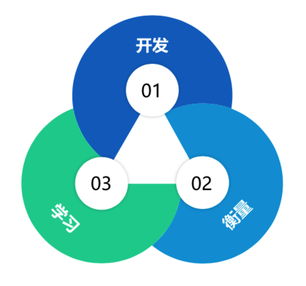
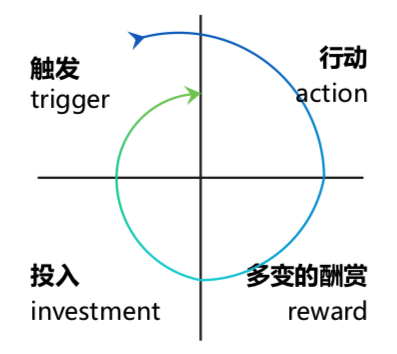
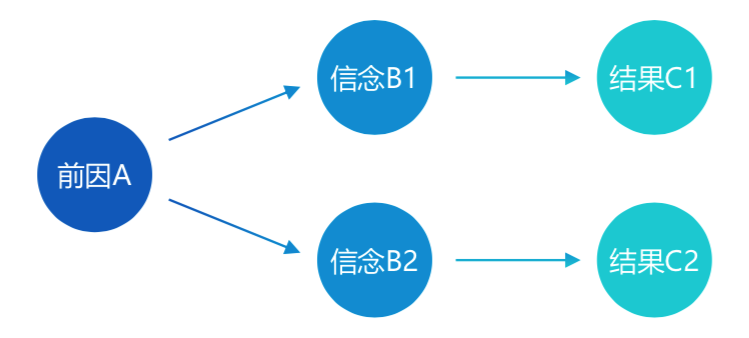
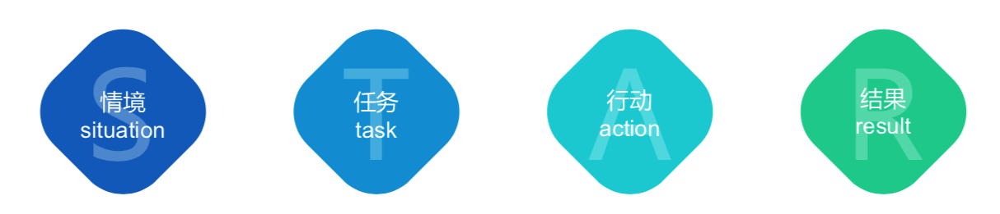
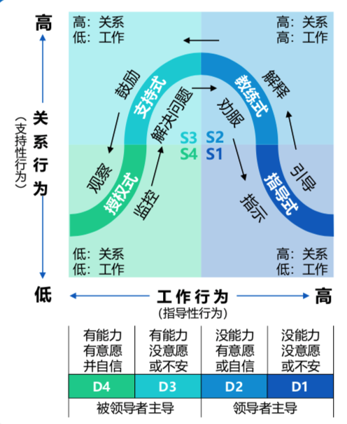
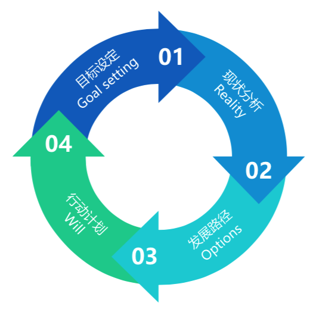
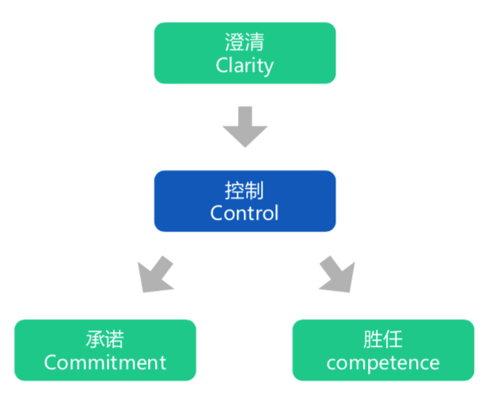

大厂必备的40个方法论¶

方法论是一种以解决问题为目标的理论体系或系统，通常涉及对问题阶段、任务、工具、方法技巧的论述。方法论会对一系列具体的方法进行分析研究、系统总结并最终提出较为一般性的原则。
概览¶
学习力：学习金字塔、费曼技巧、刻意练习、RIA阅读法、二八定律
思考力：黄金圈法则、5W1H分析法、思维导图、SWOT分析、10/10/10法则
创造力：六顶思考帽、头脑风暴、逆向思维、类比思维、SCAMPER创新思维
设计力：设计思维、最小可行性产品（MVP）、峰终定律、AARRR漏斗模型、上瘾（HOOK）模型
共情力：五大圈层模型、高效倾听模型、情绪ABC模型、乔哈里视窗、冰山模型
故事力：故事五要素、SCQA模型、SRAR模型、STORY模型、“英雄之旅”模型
领导力：领导力梯队、情景领导力模型、GROW教练模型、管理4C模型、TOPIC模型
整合力：杠杆思维、POA行动、系统思维、整合思维模型、多元思维模型
学习力¶
思考力¶
创造力¶
设计力¶
最小可行性产品（MVP）¶

MVP，Minimum Viable Product，最小可行产品。用最快、最简明的方式建立一个可用的产品原型，推向市场，测试用户是否喜欢这个产品，进而迭代完善细节。可以低成本试错，不断迭代单品。
上瘾（HOOK）模型¶

触发：外部触发（付出型/人际型/回馈型/自住型），内部触发（情绪）
行动：动机（追求快乐/希望/认同），能力（时间/金钱/体力/脑力/社会偏差/非常规性）
多变的酬赏：社交酬赏（被认同/人际奖励）、猎物酬赏（追求资源/信息/金钱）、自我酬赏（操控感/成就感/信任感）
投入：内容/数据资料/信誉/技能/关注者
上瘾模型，本质是设计一套让用户连续循环的行为模型，让用户在不知不觉中对产品上瘾，从而成为忠实用户。
共情力¶
情绪ABC模型¶

A，Antecedent，指事情的前因。
B，Bridge，桥梁，从前因到后果之间，一定会透过一座桥梁，它就是我们的信念和对情境的评价。
C，Consequence，指事情的后果。
不同的人的理念以及评价与解释不同，会得到不同结果。
事物的本身并不能影响人，人们只受对事物看法的影响。当你被事情影响，产生负面情绪，察觉下，是否是信念出现问题？
故事力¶
STAR模型¶

情景：事情是在什么情况下发生的
任务：你具体有什么任务
行动：针对这样的情况，你采用了什么行动方式
结果：结果怎样，你学习到了什么
当要讲故事时，可用STAR模型构思最简单的版本。
在简历撰写和回答情景面试题时，STAR法则被广泛运用。
领导力¶
情景领导力模型¶

员工的成长过程根据“信心”和“能力”的高低，可分为4个阶段，因此领导也应采用4种不同的领导模式，分别是指导式、教练式、支持式和授权式。
情景领导有三大技巧：
诊断：评估部属在发展阶段的需求；
弹性：能轻松自在的使用不同的领导形态；
约定领导形态：与部署建立伙伴关系，与部署协议他所需要的领导形态；
GROW教练模型¶

目标设定：确认员工业绩目标；也包含在日常工作生活中的单一事件性目标；
现状分析：搞清楚目前的现状、客观事实是什么；寻找动因；
发展路径：寻找解决方案；
行动计划：制定行动计划和评审时间；
管理4C模型¶

提升团队执行力时使用，包含四个行动：
①布置任务要清晰（Clarity）：确保员工100%理解工作；
②承诺工作要真心（Commitment）：发自内心的承诺；
③胜任工作要到位（Competence）：不仅是能力，还有态度；
④控制工作要全面（Control）：事前、事中、事后的控制；